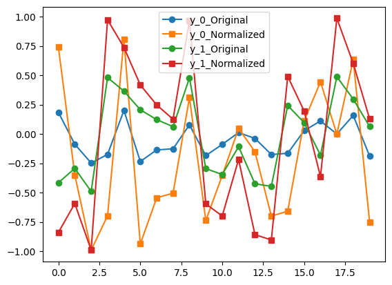
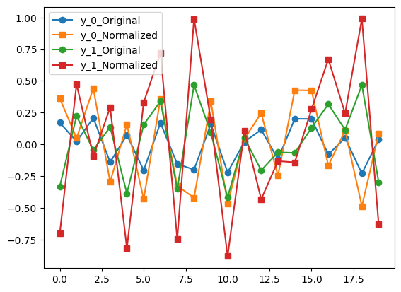

get_device()device(type='cuda')get_device (gpu_str='')
utility to suggest which pytorch device to use
is_tool (name)
Check whether name is on PATH and marked as executable.
normalize_audio (audio_in, norm='global')
normalize audio, based on the max of the absolute value
| Type | Default | Details | |
|---|---|---|---|
| audio_in | input array/tensor (numpy or Pytorch) | ||
| norm | str | global | global (use max-abs of whole clip) | channel (per-channel norm’d individually) | ’’/None |
Testing normalize_audio:
y = np.random.rand(20)-0.5 # mono
y2 = normalize_audio(y)
plot_norm_inout(y, y2) # I wrote a little test function just to plot these for the documentation; not part of aeiou
y = np.random.rand(2,20)-0.5 # stereo
y[0,:] *= 0.5 # but make one channel smaller for show
y2 = normalize_audio(y) # global norm, the default
plot_norm_inout(y, y2)
See how the orange-squares line above is bigger than the corresponding blue-squares line, but the orange one doesn’t go all the way to +/-1? Contrast that with the following below where we normalize the same input signal per channel:
…. the orange-squares line now extends to the full range.
We’ll start with a basic utilty to read an audio file. If it’s not at the sample rate we want, we’ll automatically resample it. Note that if you want MP3 support, you’ll need to install ffmpeg system-wide first.
load_audio (filename:str, sr=48000, verbose=True, norm='')
loads an audio file as a torch tensor
| Type | Default | Details | |
|---|---|---|---|
| filename | str | name of file to load | |
| sr | int | 48000 | sample rate in Hz |
| verbose | bool | True | whether or not to print notices of resampling |
| norm | str | passedto normalize_audio(), see above | |
| Returns | tensor |
Using the file in examples/, let’s see how this works:
Resampling examples/example.wav from 44100 Hz to 48000 HzLet’s check to see if we can read MP3s:
for norm in ['','global','channel']:
audio = load_audio('examples/stereo_pewpew.mp3',verbose=False, norm=norm)
print(f"norm = {norm}: shape = ",audio.shape, "Per-channel abs-maxes are : ", np.abs(audio.numpy()).max(axis=-1))norm = : shape = torch.Size([2, 236983]) Per-channel abs-maxes are : [0.8505264 0.50114477]
norm = global: shape = torch.Size([2, 236983]) Per-channel abs-maxes are : [0.98999995 0.583325 ]
norm = channel: shape = torch.Size([2, 236983]) Per-channel abs-maxes are : [0.98999995 0.99 ]Note that pedalboard could be used to read any of the following types of files…
…but we’re only using it for MP3s right now, and torchaudio for everything else.
Finds loudest sample value in the entire clip and returns the value as decibels
get_dbmax (audio)
finds the loudest value in the entire clip and puts that into dB (full scale)
| Details | |
|---|---|
| audio | torch tensor of (multichannel) audio |
Sometimes we’ll want to know if a file is “silent”, i.e. if its contents are quieter than some threshold. Here’s one simple way to implement that:
audio_float_to_int (waveform)
converts torch float to numpy int16 (for playback in notebooks)
is_silence (audio, thresh=-60)
checks if entire clip is ‘silence’ below some dB threshold
| Type | Default | Details | |
|---|---|---|---|
| audio | torch tensor of (multichannel) audio | ||
| thresh | int | -60 | threshold in dB below which we declare to be silence |
Let’s test that with some tests. If all goes well, the following assert statements will all pass uneventfully.
This is a pretty basic utility for breaking up a long sequence into batches, e.g. for model inference
batch_it_crazy (x, win_len)
(pun intended) Chop up long sequence into a batch of win_len windows
| Details | |
|---|---|
| x | a time series as a PyTorch tensor, e.g. stereo or mono audio |
| win_len | length of each “window”, i.e. length of each element in new batch |
Testing batch_it_crazy() for stereo input:
…and for mono:
…and yeah, currently that “1,” stays because other parts of the code(s) will be assuming “multichannel” audio.
The next routine creates a directory if it doesn’t already exist. We’ll even let it take a “nested” directory such as a/b/c/d and the routine will create any directories in that string.
makedir (path:str)
creates directories where they don’t exist
| Type | Details | |
|---|---|---|
| path | str | directory or nested set of directories |
Often we’ll want to grab a long list of audio filenames by looking through a directory and all its subdirectories. We could use something like glob, glob turns out to be extremely slow when large numbers of files (say, more than 100,000) are involved. Instead we will use the much faster os.scandir(), which was packaged nicely into the following routine in an answer to a StackOverflow question from which this code is modified:
fast_scandir (dir:str, ext:list)
very fast glob alternative. from https://stackoverflow.com/a/59803793/4259243
| Type | Details | |
|---|---|---|
| dir | str | top-level directory at which to begin scanning |
| ext | list | list of allowed file extensions |
Quick test:
['examples/stereo_pewpew.mp3', 'examples/example.wav']Often, rather than being given a single parent directory, we may be given a list of directories in which to look for files. The following just called fast_scandir() for each of those:
get_audio_filenames (paths:list)
recursively get a list of audio filenames
| Type | Details | |
|---|---|---|
| paths | list | directories in which to search |
Here’s a fun trick to show off how fast this is: Run in the user’s directory tree:
path = str(os.path.expanduser("~"))+'/Downloads'
if os.path.exists(path):
files = get_audio_filenames(path)
print(f"Found {len(files)} audio files.")
else:
print("Ok it was just a thought.")Ok it was just a thought.untuple (x, verbose=False)
Recursive. For when you’re sick of tuples and lists: keeps peeling off elements until we get a non-tuple or non-list, i.e., returns the ‘first’ data element we can ‘actually use’
in concert with Pytorch Lightning
get_latest_ckpt (dir_tree, run_name_prefix='', sim_ckpts=[''], verbose=True)
This will grab the most recent checkpoint filename in dir tree given by name
| Type | Default | Details | |
|---|---|---|---|
| dir_tree | name of the run without unique identifer | ||
| run_name_prefix | str | unique identifier for particular run | |
| sim_ckpts | list | [’’] | string or list of strings. other paths to check under if nothing’s in dir_tree |
| verbose | bool | True | whether to print message(s) |
# testing
get_latest_ckpt('/fsx/shawley/runs/clapg88s',
run_name_prefix='songlike',
sim_ckpts='/fsx/shawley/runs/longer-songs2-stacked-clap-audio') Nothing relevant found in /fsx/shawley/runs/clapg88s. Checking also in /fsx/shawley/runs/longer-songs2-stacked-clap-audio.
pattern = /fsx/shawley/runs/longer-songs2-stacked-clap-audio
Also checking in ['/fsx/shawley/runs/longer-songs2-stacked-clap-audio']
directory = /fsx/shawley/runs/longer-songs2-stacked-clap-audioPath('/fsx/shawley/runs/longer-songs2-stacked-clap-audio/songlike_0eac0fa8/checkpoints/epoch=10-step=100000.ckpt')#testing
name = '/fsx/shawley/runs/longer-songs2-stacked-clap-audio'
ckpt_path = get_latest_ckpt(name, run_name_prefix='')
ckpt_pathLooking for latest checkpoint in /fsx/shawley/runs/longer-songs2-stacked-clap-audio/*/checkpoints/*.ckpt'/fsx/shawley/runs/longer-songs2-stacked-clap-audio/songlike_0eac0fa8/checkpoints/epoch=10-step=100000.ckpt'get_run_info (run_name, verbose=True)
parses run_name into (ideally) prefix & id using underscore as separator, and/or fills in missing info if needed NOTE: do not trust generated strings to be same on other processes
rnd_string (n=8)
random letters and numbers of given length. case sensitive
{'prefix': 'songlike', 'id': '345876jh', 'run_name': 'songlike_345876jh'}Sample usage of the previous few functions:
# Reading from OLD checkpoint to start
run_info = get_run_info(args.run_name)
grab_latest_checkpoint = True
if grab_latest_checkpoint:
print("Looking for old checkpoint to load for startup")
ckpt_path = get_latest_ckpt(args.name, run_name_prefix=run_info['prefix'])
if os.path.exists(ckpt_path):
print(f"Found latest checkpoint at {ckpt_path}")
args.ckpt_path = ckpt_path
if args.ckpt_path:
print(f"Loading model from {args.ckpt_path}")
model = OurModel.load_from_checkpoint(args.ckpt_path, latent_ae=latent_diffae, clap_module=clap_module, strict=False)
else:
model = OurModel(latent_ae=latent_diffae, clap_module=clap_module)
# Where to save NEW checkpoints
ckpt_dir = f"{args.name}/{run_info['run_name']}/checkpoints"
print(f"New checkpoints will be saved in {ckpt_dir}")
ckpt_callback = pl.callbacks.ModelCheckpoint(dirpath=ckpt_dir, every_n_train_steps=args.checkpoint_every, save_top_k=-1, save_last=True)
wandb_logger = pl.loggers.WandbLogger(project=args.name, id=run_info['id'])
wandb_logger.watch(latent_diffusion_model)
push_wandb_config(wandb_logger, args)